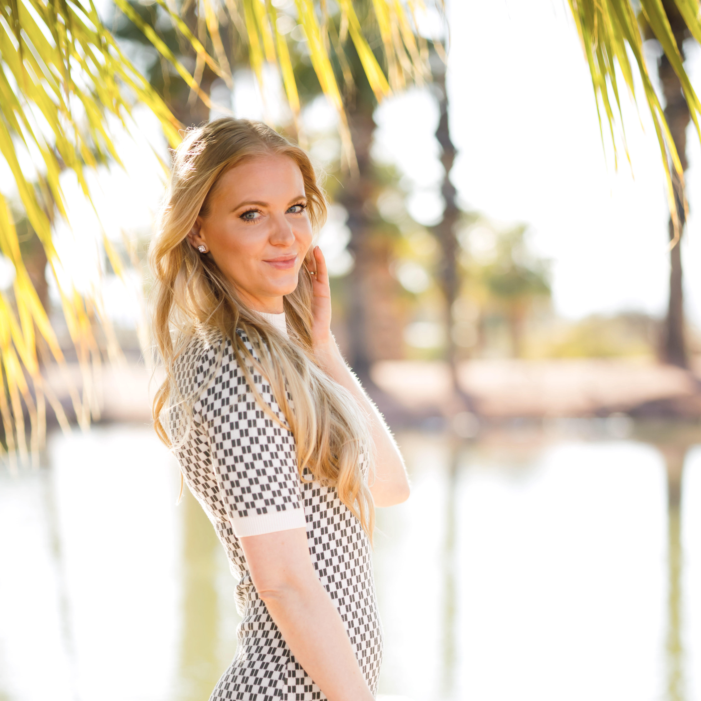
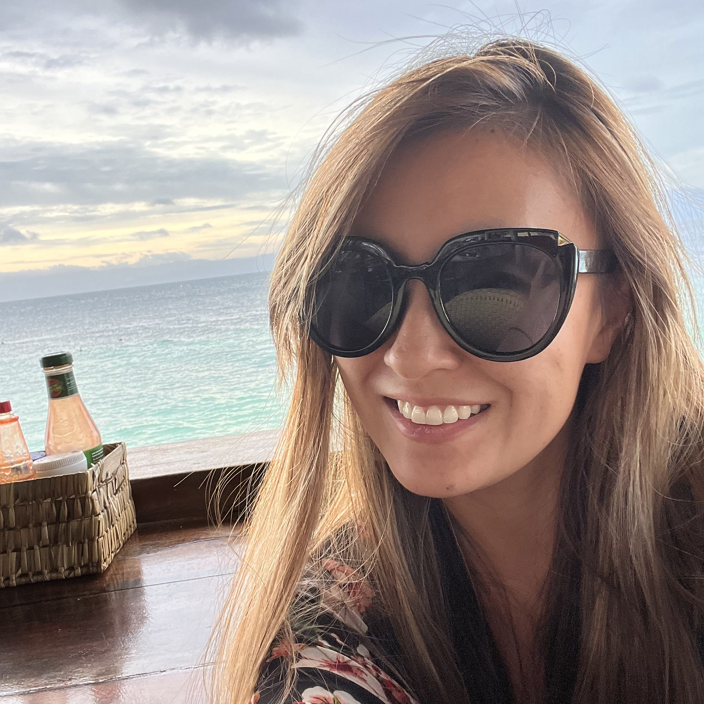
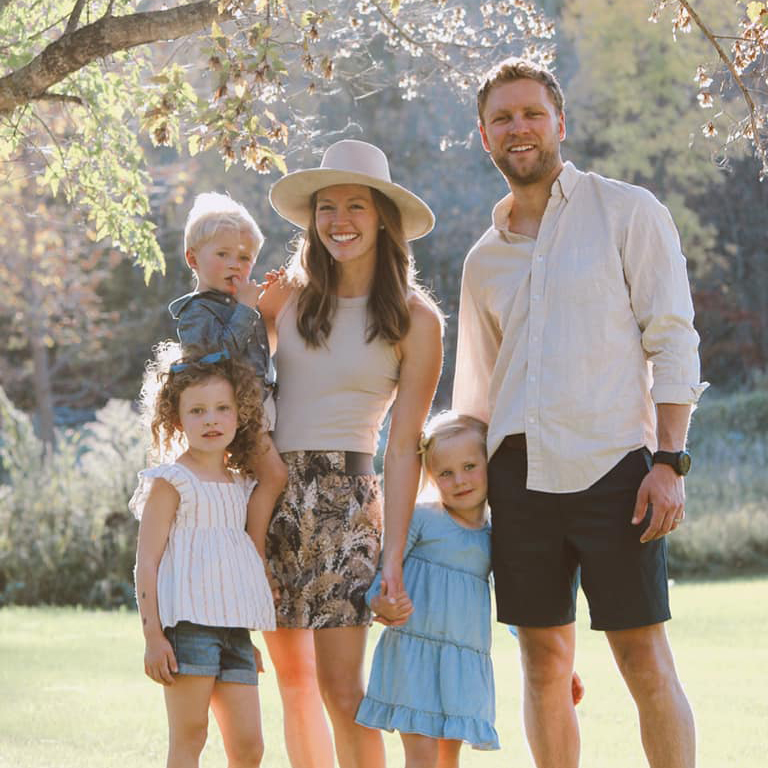
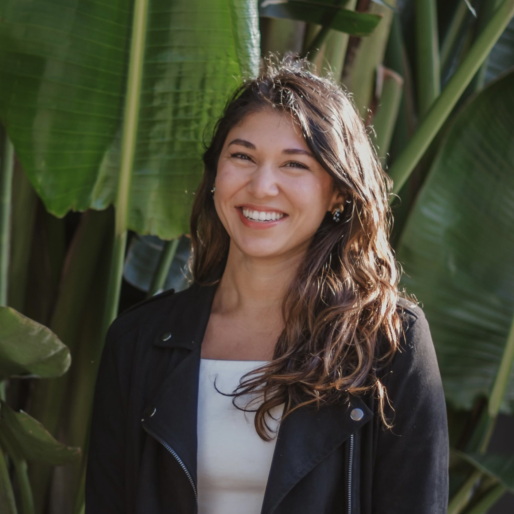
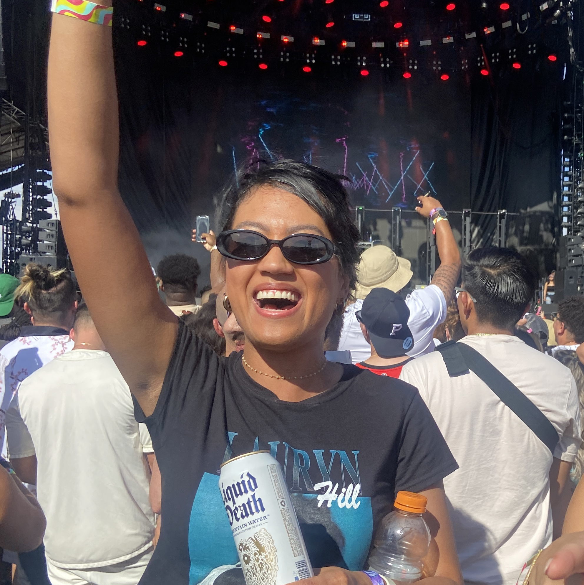
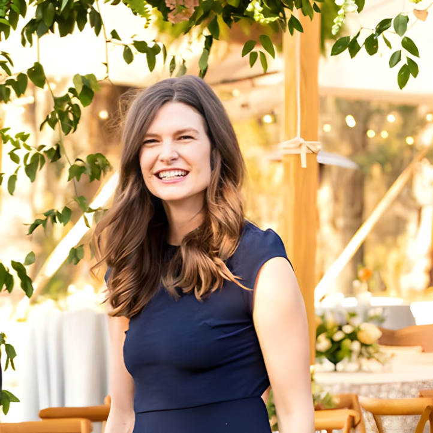
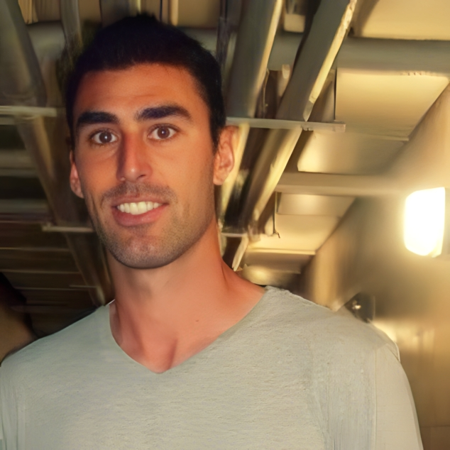
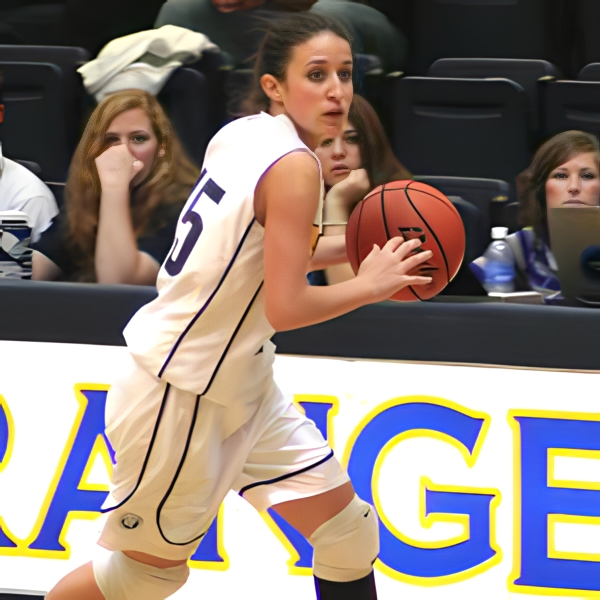

THE WEDDING PARTY

SARAH HOSTERT
Best Person
From:
Scottsdale, AZBest Trait:
Supportive sisterFavorite Memory:
We celebrated Sarah's 30th birthday party with her friends in Vegas and that was a blast. I also dragged Sarah and one of her friends to a parking lot behind the MGM where we hopped into some fancy cars for a random video shoot and petted a baby tiger...years later we recognized the people we met with the tiger when watching Tiger King.

ANNA MILLER
Bridesmaid
From:
Oakland, CABest Trait:
Best hype girl everFavorite Memory:
I first met Anna at the airport in Indianapolis on a recruitment trip when we were in college, where I learned she is a light weight with alcohol and an open book to everyone. Anna is the best for her openness about anything and everything.
JESSICA ZHENG
Bridesmaid
From:
Berkeley, CABest Trait:
Friendly to everyoneFavorite Memory:
Jessica and I were roommates in the mission in SF. I told her I probably would only live in my "closet" (it was a room, but barely) for 3 months. I stayed for 3 very fun years in the "Beehive" house.

CAROLYN DISSE
Bridesmaid
From:
Detroit Lakes, MNBest Trait:
Sweet & caringFavorite Memory:
Care and I grew up in Minnesota together and I spent a lot of time with her family at their house eating their leftovers or running around the resort her family owned. The best was probably driving the golf carts very recklessly where it wasn't uncommon for someone to fall out if they weren't strapped in. (Where you strap in a golf bag, that's where you strap yourself in.)

TESSA JOHNSON
Bridesmaid
From:
San Francisco, CABest Trait:
Non-stop smilingFavorite Memory:
Tessa is always in for a good time, especially when it involves booking a flight, pizza, and/or a cocktail. We have been to Portland, Denver, Scottsdale, Tahoe, and my personal fave - Yacht week in Croatia.

ALLISON DEVANE
Bridesmaid
From:
Phoenix, AZBest Trait:
Always brings the partyFavorite Memory:
Allison and I met in college through our sorority at ASU where we went to a few parties together. We continued the fun post graduation and have taken a few trips to Vegas where my fave was when Allison twerked on Diplo's DJ booth (to which he said, just don't fall) and I cheered her on because I couldn't commit to not falling...and lets be real, I still don't know how to twerk.
MARY BRAY ERICKSON
Bridesmaid
From:
San Francisco, CABest Trait:
Creative AFFavorite Memory:
The first weekend I met Mary Bray, we spent the whole weekend together (with April). Literally Friday to Sunday with having sleepovers. By the end of the weekend we had given ourselves a nickname (The Stoop Kids) and have been good friends ever since.

APRIL RODGERS
Bridesmaid
From:
Portland, ORBest Trait:
Always down for adventureFavorite Memory:
April and I have lived in quite a few of the same places: grew up together in Minnesota, some college time in Arizona, and prime years in San Francisco. My favorite call I got was when she told me she was moving to SF. When she introduced me to her SF roommates, she warned them, "you will be seeing her a lot." And I proceeded to spend 50% of my weekends at April's apartment on Hyde st.DAVID MUNDAY
Best Person
From:
Santa Cruz, CABest Trait:
Loyal & dependableFavorite Memory:
When I was a freshman in high school my teachers claimed that I was disruptive. My counselor was coming down on me hard. I told my brother this. He proceeded to interview all of my teachers and document his findings, which conflicted with my counselor’s negative view of me. He then presented these findings to my counselor who promptly transferred me to a new counselor, who I loved!SAM BERRIN
Groomsman
From:
Oakland, CABest Trait:
Small, optimistic, steadyFavorite Memory:
Summer school before sophomore year in high school I got dropped off at Sam’s house every morning. We made a huge breakfast and called our operation Sam and An’s. Every day we’d set off the smoke alarms in Sam’s house.PAUL ARNAUTOFF
Groomsman
From:
Mill Valley, CABest Trait:
Life of the party, your #1 cheerleaderFavorite Memory:
I met Paul freshman year on the soccer team. After practice he'd say, "if you take the freeway to your house then mine is on the way." On a few occasions I learned just how long the bus ride was from the Outer Sunset to Potrero Hill. His ability to persuade and create fun has kept me by his side.NICK ADLER
Groomsman
From:
Burlingame, CABest Trait:
FunFavorite Memory:
I met Nick when I bribed him with slim jims to vote for me for soccer captain. We've enjoyed not taking life too seriously together ever since.NICK O'SHEA
Groomsman
From:
San Francisco, CABest Trait:
SupportiveFavorite Memory:
Nick and I met freshman year in high school, went on to work many jobs together, and spent many years living together. Our greatest accomplishment was raising baby ducks in our apartment during our college years.
STANLEY TANG
Groomsman
From:
San Francisco, CABest Trait:
FunnyFavorite Memory:
Stanley and I met at DoorDash spending many late nights together. We even signed our first merchant together, Cardinal Sushi.

JEFF COSGRIFF
Groomsman
From:
Oakland, CABest Trait:
WiseFavorite Memory:
Jeff and I lived minutes apart growing up. We met in 8th grade on a club soccer team. We shared an obsession for soccer playing any spare minute we had. Most Thanksgivings we'd meet up to play soccer at skyline college after dinner was over.
